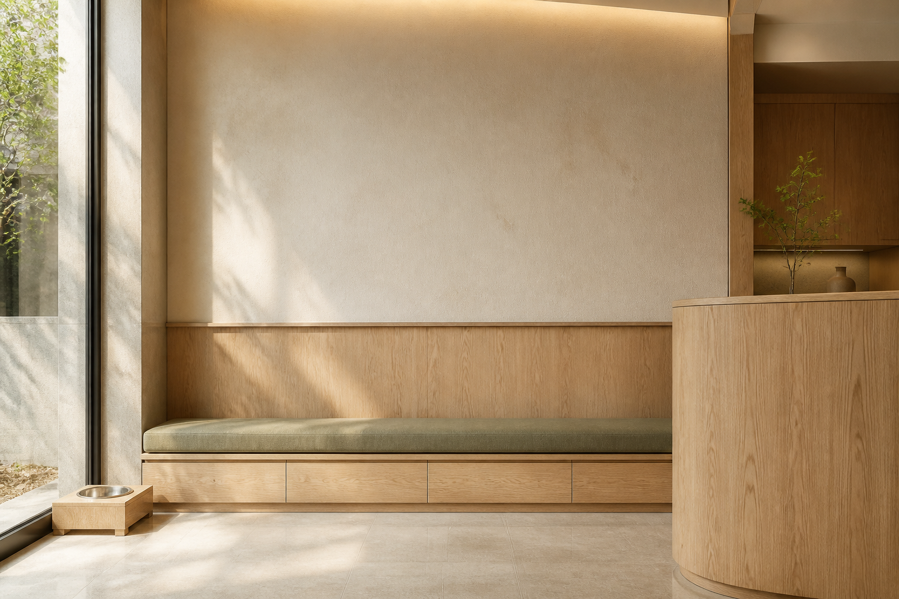

01 / ANIMAL HOSPITAL
해든 동물의료센터
보호자의 걱정이 가장 먼저 시작된다는 점에서 출발했습니다. 따뜻한 사진과 첫 방문 안내, 진료 이후 관리의 순서를 한 흐름으로 보여 주는 여정형 홈페이지입니다.
- KEYWORD
- WARM · GUIDED · FAMILY
- STRUCTURE
- 보호자 여정 중심
- PAGES
- 소개 · 진료 · 의료진 · 방문안내
WORK / WEBSITE DEMO
같은 템플릿에 이름만 바꾸지 않습니다. 진료의 성격, 공간의 소재, 고객이 궁금해하는 순서에 맞춰 화면의 리듬을 새로 설계합니다.
아래는 가상의 병원을 바탕으로 제작한 홈페이지 상품 데모입니다.

01 / ANIMAL HOSPITAL
보호자의 걱정이 가장 먼저 시작된다는 점에서 출발했습니다. 따뜻한 사진과 첫 방문 안내, 진료 이후 관리의 순서를 한 흐름으로 보여 주는 여정형 홈페이지입니다.

02 / DENTAL CLINIC
필요한 정보를 정확히 읽을 수 있도록, 화면을 정밀한 목록과 조용한 여백으로 구성했습니다. 치료 전 이해가 편안함으로 이어지는 치과의 태도를 담았습니다.

03 / KOREAN MEDICINE
나무와 한지의 결, 천천히 열리는 문처럼 공간의 감각을 화면으로 옮겼습니다. 증상보다 일상의 회복을 먼저 말하는 에디토리얼형 홈페이지입니다.
YOUR NEXT WORK